건축기사 (2016-05-08 기출문제)
1과목: 건축계획
1. 래드번(Radburn) 계획에서 슈퍼블록을 구성함으로써 얻어질 수 있는 효과로 옳지 않은 것은?
- 충분한 공동의 오픈스페이스의 확보가 가능
- 건물을 집약화함으로써 고층화 ㆍ 효율화가 가능
- 도로교통의 개선, 즉 보도와 차도의 완전한 분리가 가능
- 커뮤니티시설의 중심배치로 간선도로변의 활성화가 가능
(정답률: 65%)

2. 고층밀집형 병원에 관한 설명으로 옳지 않은 것은?
- 병동에서 조망을 확보할 수 있다.
- 대지를 효과적으로 이용할 수 있다.
- 각종 방재대책에 대한 비용이 높다.
- 병원의 확장 등 성장변화에 대한 대응이 용이하다.
(정답률: 86%)
3. 주택의 부엌에서 작업과정을 고려한 작업대의 배치 순서로 가장 알맞은 것은?
- 레인지 → 싱크대 → 조리대 → 냉장고
- 조리대 → 싱크대 → 레인지 → 냉장고
- 싱크대 → 냉장고 → 조리대 → 레인지
- 냉장고 → 싱크대 → 조리대 → 레인지
(정답률: 89%)
4. 다음의 건축물 중 주심포식 건축양식에 속하지 않는 것은?
- 강릉 객사문
- 석왕사 응진전
- 봉정사 극락전
- 부석사 무량수전
(정답률: 48%)
5. 엘리베이터 배치 시 고려사항으로 옳지 않은 것은?
- 대면배치 시 대면거리는 동일 군 관리의 경우는 3.5～4.5m로 한다.
- 엘리베이터 홀은 엘리베이터 정원 합계의 10%정도를 수용할 수 있도록 한다.
- 여러 대의 엘리베이터를 설치하는 경우, 그룹별 배치와 군 관리 운전방식으로 한다.
- 일렬배치는 4대를 한도로 하고, 엘리베이터 중심간 거리는 8m 이하가 되도록 한다.
(정답률: 70%)
6. 전통 주거건축 중 부엌, 방, 대청, 방의 순으로 배열되는 일(一)자형 평면을 가진 민가형은?
- 남부 지방형
- 개성 지방형
- 평안도 지방형
- 함경도 지방형
(정답률: 85%)
7. 공장의 지붕형태에 관한 설명으로 옳은 것은?
- 솟음지붕은 채광, 환기에 적합한 방법이다.
- 샤렌구조는 기둥이 많이 소요된다는 단점이 있다.
- 뾰족지붕은 직사광선이 완전히 차단된다는 장점이 있다.
- 톱날지붕은 남향으로 할 경우 하루 종일 변함없는 조도를 가진 약광선을 받아들일 수 있다.
(정답률: 66%)
8. 공동주택의 평면형식에 관한 설명으로 옳지 않은 것은?
- 집중형은 각 세대별 조망이 다르다.
- 중복도형은 독신자 아파트에 많이 이용된다.
- 편복도형은 각호의 통풍 및 채광이 양호하다.
- 계단실형은 통행부 면적이 커서 대지의 이용률이 높다.
(정답률: 81%)
9. 쇼핑센터의 몰(Mall)에 관한 설명으로 옳은 것은?
- 전문점과 핵상점의 주출입구는 몰에 면하도록 한다.
- 쇼핑체류시간을 늘릴 수 있도록 방향성이 복잡하게 계획한다.
- 몰은 고객의 통과동선으로서 부속시설과 서비스 기능의 출입이 이루어지는 곳이다.
- 일반적으로 공기조화에 의해 쾌적한 실내기후를 유지할 수 있는 오픈 몰(Open Mall)이 선호된다.
(정답률: 71%)
10. 극장의 평면형 중 아레나(Arena) 형에 관한 설명으로 옳은 것은?
- 투시도법을 무대공간에 응용한 형식이다.
- 무대의 장치나 소품은 주로 높은 기구로 구성된다.
- 픽쳐프레임 스테이지(Picture Frame Stage)라고도 한다.
- 가까운 거리에서 관람하면서 가장 많은 관객을 수용할 수 있다.
(정답률: 88%)
11. 극장의 객석 계획에 관한 설명 중 옳지 않은 것은?
- 객석의 세로통로는 무대를 중심으로 하는 방사선상이 좋다.
- 연극 등을 감상하는 경우 연기자의 표정을 읽을 수 있는 가시한계는 15m 정도이다.
- 객석은 무대의 중심 또는 스크린의 중심을 중심으로 하는 원호의 배열이 이상적이다.
- 좌석을 엇갈리게 배열(Stagger Seats) 하는 방법은 객석의 바닥구배가 완만할 경우에는 사용할 수 없으며 통로 폭이 좁아지는 단점이 있다.
(정답률: 79%)
12. 국지도로의 유형 중 쿨데삭(Cul-De-Sac) 형에 관한 설명으로 옳은 것은?
- 통과교통이 다수 발생한다.
- 우회도로가 있어 방재, 방범상 유리하다.
- 도로의 최대 길이는 30m 이하이어야 한다.
- 주택 배면에 보행자전용도로가 설치되어야 효과적이다.
(정답률: 57%)
13. 상점 내에서 조명에 의한 반사 글레어를 방지하기 위한 대책으로 옳지 않은 것은?
- 젖빛 유리구를 사용한다.
- 간접조명방식을 채택한다.
- 광도가 낮은 배광기구를 이용한다.
- 평활하고 광택이 있는 반사면을 사용한다.
(정답률: 80%)
14. 미술관 전시공간의 순회형식 중 갤러리 및 코리도 형식에 관한 설명으로 옳은 것은?
- 복도의 일부를 전시장으로 사용할 수 있다.
- 전시실 중 하나의 실을 폐쇄하면 동선이 단절된다는 단점이 있다.
- 중앙에 커다란 홀을 계획하고 그 홀에 접하여 전시실을 배치한 형식이다.
- 이 형식을 채용한 대표적인 건축물로는 뉴욕 근대 미술관과 프랭크 로이드 라이트의 구겐하임 미술관이 있다.
(정답률: 80%)
15. 다음 중 초등학교 저학년에 대해 가장 권장할만한 학교운영방식은?
- 달톤형
- 플래툰형
- 종합교실형
- 교과교실형
(정답률: 90%)
16. 리조트 호텔에 속하지 않는 것은?
- 해변 호텔(Beach Hotel)
- 부두 호텔(Harbor Hotel)
- 클럽 하우스(Club House)
- 산장 호텔(Mountain Hotel)
(정답률: 79%)
17. 사무소 건축에서 코어 계획에 관한 설명으로 옳지 않은 것은?
- 코어 부분에는 계단실도 포함시킨다.
- 코어 내의 각 공간은 각 층마다 공통의 위치에 두도록 한다.
- 엘리베이터 홀이 출입구문에 바짝 접근해 있지 않도록 한다.
- 코어 내에서 화장실은 외래자에게 잘 알려질 수 없는 곳에 위치시킨다.
(정답률: 89%)
18. 탑상형 공동주택에 관한 설명으로 옳지 않은 것은?
- 각 세대에 시각적인 개방감을 준다.
- 각 세대의 거주 조건이나 환경이 균등하다.
- 도심지 내의 랜드마크적인 역할이 가능하다.
- 건축물 외면의 4개의 입면성을 강조한 유형이다.
(정답률: 84%)
19. 도서관의 출납시스템 중 자유개가식에 관한 설명으로 옳지 않은 것은?
- 책의 마모, 망실의 우려가 크다.
- 서가의 정리가 잘 안되면 혼란스럽게 된다.
- 자유로이 책의 내용을 보고 필요한 책을 정확히 고를 수 있다.
- 보통 2실형이고, 50,000권 이상의 서적보관과 열람에 적당하다.
(정답률: 89%)
20. 그리스 건축의 오더 중 도릭 오더의 구성에 속하지 않는 것은?
- 볼류트(Volute)
- 프리즈(Frieze)
- 아바쿠스(Abacus)
- 에키누스(Echinus)
(정답률: 57%)
2과목: 건축시공
21. 수밀콘크리트 시공에 대한 설명 중 옳지 않은 것은?
- 불가피하게 이어치기 할 경우 이어치기 면의 레이턴스를 제거하고 빈배합 콘크리트를 사용한다.
- 콘크리트의 표면마감은 진공처리방법을 사용하는 것이 좋다.
- 타설이 완료된 콘크리트면은 충분한 습윤양생을 한다.
- 연속타설 시간간격은 외기온도가 25°C를 넘었을 경우는 1.5시간, 25°C 이하일 경우는 2시간을 넘어서는 안된다.
(정답률: 64%)
22. 목조 지붕틀 구조에 있어서 모서리 기둥과 층도리 맞춤에 사용되는 철물은?
- 띠쇠
- 감잡이쇠
- 주걱볼트
- ㄱ자쇠
(정답률: 64%)
23. 시멘트 200포를 사용하여 배합비가 1:3:6의 콘크리트를 비벼냈을 때의 전체 콘크리트의 량은? (단, 물시 멘트비는 60%이고 시멘트 1포대는 40kg이다.)
- 25.25m3
- 36.36m3
- 39.39m3
- 44.44m3
(정답률: 64%)
24. 다음 중 건설공사 경비에 포함되지 않는 것은?
- 외주제작비
- 현장관리비
- 교통비
- 업무추진비
(정답률: 60%)
25. 표준관입시험에서 상대밀도의 정도가 중간(Medium)에 해당될 때의 사질지반의 N값으로 옳은 것은?
- 0～4
- 4～10
- 10～30
- 30～50
(정답률: 73%)
26. ALC 제품에 관한 설명으로 옳지 않은 것은?
- 절건상태에서의 비중이 0.75～1 정도이다.
- 압축강도는 3MPa～4MPa 정도이다.
- 내화성능을 보유하고 있다.
- 사용 후 변형이나 균열이 적다.
(정답률: 47%)
27. 슬래브에서 4변 고정인 경우 철근배근을 가장 많이 하여야 하는 부분은?
- 단변방향의 주간대
- 단변방향의 주열대
- 장변방향의 주간대
- 장변방향의 주열대
(정답률: 63%)
28. 도막방수에 관한 설명으로 옳지 않은 것은?
- 방수재의 도포시 치켜올림 부위를 도포한 다음, 평면부위의 순서로 도포한다.
- 방수재의 겹쳐바르기 폭은 100mm 내외로 한다.
- 도막두께는 원칙적으로 사용량을 중심으로 관리한다.
- 우레아수지계 도막방수재를 스프레이 시공할 경우 바탕면과 200mm 이하로 간격을 유지하도록 한다.
(정답률: 60%)
29. 공사착공전에 건축물의 형태에 맞춰 줄을 띄우거나 석회 등으로 선을 그어 건축물의 건설위치를 표시하는것으로 도로 및 인접건축물과의 관계, 건축물의 건축으로 인한 재해 및 안전대책 점검과 관련 있는 것은?
- 줄쳐보기
- 벤치마크
- 먹매김
- 수평보기
(정답률: 65%)
30. 다음 중 QC 활동의 도구가 아닌 것은?
- 특성요인도
- 파레토그램
- 층별
- 기능계통도
(정답률: 77%)
31. 석재에 관한 설명으로 옳지 않은 것은?
- 심성암에 속한 암석은 대부분 입상의 결정 광물로 되어 있어 압축강도가 크고 무겁다.
- 화산암의 조암광물은 결정질이 작고 비결정질이어서 경석과 같이 공극이 많고 물에 뜨는 것도 있다.
- 안산암은 강도가 작고 내화적이지 않으나, 색조가 균일하며 가공도 용이하다.
- 수성암은 화성암의 풍화물, 유기물, 기타 광물질이 땅속에 퇴적되어 지열과 지압을 받아서 응고된것이다.
(정답률: 74%)
32. 부순 골재를 사용하는 콘크리트의 배합설계에 관한 설명으로 옳지 않은 것은?
- 굵은골재의 크기는 강자갈의 경우보다 조금 작은편이 좋다.
- 잔골재는 특히 미립분이 부족하지 않도록 주의한다.
- 모래는 강자갈 콘크리트의 경우보다 적게 사용한다.
- 될 수 있는 한 AE제를 사용한다.
(정답률: 58%)
33. 석고플라스터 바름에 대한 설명으로 옳지 않은 것은?
- 보드용 플라스터는 초벌바름, 재벌바름의 경우 물을 가한 후 2시간 이상 경과한 것은 사용할 수 없다.
- 실내온도가 10°C 이하일 때는 공사를 중단한다.
- 바름작업 중에는 될 수 있는 한 통풍을 방지한다.
- 바름작업이 끝난 후 실내를 밀폐하지 않고 가열과 동시에 환기하여 바름면이 서서히 건조되도록 한다.
(정답률: 62%)
34. 철골공사에 사용되는 공구가 아닌 것은?
- 턴버클(Turn Buckle)
- 리머(Reamer)
- 임팩트렌치(Impact Wrench)
- 세퍼레이터(Separater)
(정답률: 74%)
35. 모든 석재와 콘크리트가 잘 부착되도록 쌓고, 콘크리트가 앞면접촉부까지 채워지도록 다지는 돌쌓기 방법은?
- 메쌓기
- 찰쌓기
- 막돌쌓기
- 건쌓기
(정답률: 66%)
36. 일반콘크리트에서 굳지 않은 콘크리트 중의 전 염소이온량은 얼마 이하로 하여야 하는가? (단, 콘크리트표준시방서 기준)
- 0.10kg/m3
- 0.20kg/m3
- 0.30kg/m3
- 0.40kg/m3
(정답률: 78%)
37. 다음 중 공사 진행의 일반적인 순서로 옳은 것은?
- 가설공사 → 공사 착공 준비 → 토공사→ 지정 및 기초공사 → 구조체공사
- 공사 착공 준비 → 가설공사 → 토공사→ 지정 및 기초공사 → 구조체공사
- 공사 착공 준비 → 토공사 → 가설공사→ 구조체공사 → 지정 및 기초공사
- 공사 착공 준비 → 지정 및 기초공사→ 토공사 → 가설공사 → 구조체공사
(정답률: 79%)
38. 다음 중 녹막이 칠에 사용하는 도료가 아닌 것은?
- 광명단
- 크레오소트유
- 아연분말 도료
- 역청질 도료
(정답률: 78%)
39. 공사원가 구성요소의 하나인 직접공사비에 속하지 않는 것은?
- 자재비
- 노무비
- 경비
- 일반관리비
(정답률: 72%)
40. 콘크리트 배합에 직접적인 영향을 주는 요소가 아닌 것은?
- 시멘트 강도
- 물시멘트비
- 철근의 품질
- 골재의 입도
(정답률: 74%)
3과목: 건축구조
41. 다음 그림과 같이 용접을 할 때, 용접의 목두께(a)를 구하는 식으로 옳은 것은?
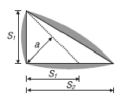
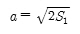
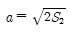
- a=0.7S1
- a=0.7S2
(정답률: 77%)
42. 그림과 같은 정정구조의 CD부재에서 C, D점의 휨모멘트값 중 옳은 것은?
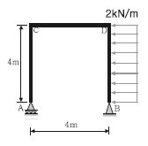
- (C) 0kN⋅m , (D) 16kN⋅m
- (C) 16kN⋅m , (D) 16kN⋅m
- (C) 0kN⋅m , (D) 32kN⋅m
- (C) 32kN⋅m , (D) 32kN⋅m
(정답률: 69%)
43. 그림과 같은 직사각형 기둥에서 띠철근의 최대간격은? (단, 주근은 D22, 띠철근은 D10)
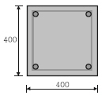
- 300mm
- 352mm
- 400mm
- 480mm
(정답률: 64%)
44. 그림과 같은 양단 고정보의 단부 휨모멘트는?
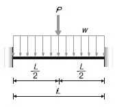
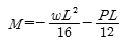
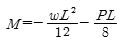
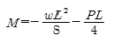
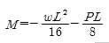
(정답률: 59%)
45. 다음 캔틸레버보의 자유단의 처짐각은? (단, 탄성계수 E, 단면2차모멘트 I )
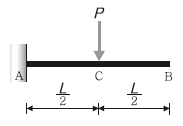
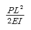
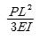
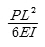
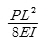
(정답률: 66%)
46. 다음 그림과 같은 휨모멘트도를 통해 구조물에 작용하는 수평하중 P 를 구하면?
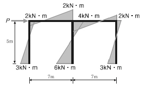
- 2kN
- 3kN
- 4kN
- 6kN
(정답률: 56%)
47. 그림과 같은 단면의 x축에 대한 단면계수 값으로서 옳은 것은?
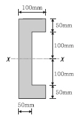
- 1.278 × 106㎣
- 1.298 × 106㎣
- 1.378 × 106㎣
- 1.398 × 106㎣
(정답률: 52%)
48. 인장을 받는 이형철근의 정착길이(ld)는 기본정착길이(ldb)에 보정계수를 곱하여 구한다. 이 보정계수에 대한 설명 중 옳지 않은 것은? (단, KCI2012 기준)
- 철근배치 위치계수 α 상부철근일 경우 1.5이고, 기타 철근일 경우 1.0이다.
- 철근크기계수 ϓ는 철근직경이 D22 이상인 경우 1.0이고, D19 이하일 경우 0.8이다.
- 철근 도막계수 β는 도막되지 않은 철근일 경우 1.0이다.
- 경량콘크리트계수 λ는 일반콘크리트인 경우 1.0이다.
(정답률: 44%)
49. 그림과 같은 구조물의 부정정 차수는?
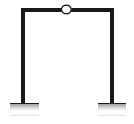
- 1차 부정정
- 2차 부정정
- 3차 부정정
- 4차 부정정
(정답률: 74%)
50. 반T형보의 유효폭으로 옳은 것은? (단, 보 경간은 6m)
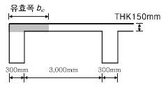
- 800mm
- 1,200mm
- 1,800mm
- 2,300mm
(정답률: 49%)
51. 직사각형 단면의 탄성탄면계수에 대한 소성단면계수의 비(比)는?
- 0.67
- 1.20
- 1.50
- 3.00
(정답률: 50%)
52. 다음에서 설명하는 용어는?
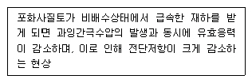
- 히빙
- 액상화
- 보일링
- 파이핑
(정답률: 65%)
53. 부재의 EI가 일정하고, 양단의 지지상태가 그림과 같은 경우, A기둥의 탄성좌굴하중은 B기둥의 탄성좌굴 하중의 몇 배인가?
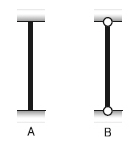
- 4배
- 6배
- 8배
- 16배
(정답률: 62%)
54. 파단선 A-B-F-C-D의 인장재 순단면적은? (단, 볼트 구멍지름 d=22mm , 인장재 두께는 6mm)
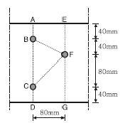
- 1,164mm2
- 1,364mm2
- 1,564mm2
- 1,764mm2
(정답률: 53%)
55. 지진의 진도(Intensity)와 규모(Magnitude)에 대한 설명으로 옳지 않은 것은?
- 진도는 상대적 개념의 지진크기이다.
- 규모는 장소에 관계없는 절대적 개념의 크기이다.
- 진도는 사람이 느끼는 감각, 물체이동 등을 계급별로 구분한다.
- 규모는 지반의 운동정도를 평가하나 정밀하지는 않다.
(정답률: 75%)
56. 강도설계법에서 철근콘크리트 구조물 설계시 고려해야 하는 하중조합으로 옳지 않은 것은? (단, D는 고정하중, F는 유체압 및 유기내용물하중, L은 활하중, W는 풍하중, E는 지진하중, S는 적설하중)
- U=1.4(D+F)
- U=1.2D+1.3W+1.0L+0.5S
- U=1.2D+1.0E+1.0L+0.2S
- U=1.4D+1.3L+1.6S
(정답률: 59%)
57. 강구조의 볼트접합에 관한 일반적인 설명으로 옳지 않은 것은?
- 볼트는 가공정밀도에 따라 상볼트, 중볼트, 흑볼트로 나뉜다.
- 볼트 중심 사이의 간격을 게이지라인(Gauge Line)이라고 한다.
- 게이지라인(Gauge Line)과 게이지라인과의 거리를 게이지(Gauge)라고 한다.
- 배치방식은 정렬배치와 엇모배치가 있다.
(정답률: 69%)
58. 다음 그림과 같은 부재의 최대 휨응력은 약 얼마인가? (단, 부재의 자중은 무시한다.)
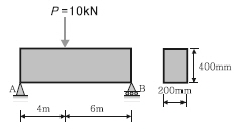
- 1.2MPa
- 2.2MPa
- 3.6MPa
- 4.5MPa
(정답률: 37%)
59. 지진력저항시스템 중 다음 각 구조시스템에 관한 설명으로 옳지 않은 것은?
- 모멘트골조방식: 수직하중과 횡력을 보와 기둥으로 구성된 라멘골조가 저항하는 구조방식
- 연성모멘트골조방식: 횡력에 대한 저항능력을 증가시키기 위하여 부재와 접합부의 연성을 증가시킨모멘트골조
- 이중골조방식: 횡력의 25% 이상을 부담하는 전단벽이 연성모멘트골조와 조화되어 있는 구조방식
- 건물골조방식: 수직하중은 입체골조가 저항하고, 지진하중은 전단벽이나 가새골조가 저항하는 구조방식
(정답률: 73%)
60. 그림은 연직하중을 받는 철근콘크리트의 보의 균열 상태를 표시한 것이다. 전단력에 의해서 생기는 대표적인 균열의 형태로 옳은 것은?
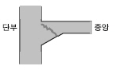
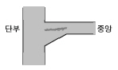
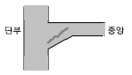
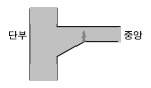
(정답률: 60%)
4과목: 건축설비
61. 조명설비에서 연색성에 관한 설명으로 옳지 않은 것은?
- 평균 연색평가수(Ra)가 0에 가까울수록 연색성이 좋다.
- 일반적으로 할로겐전구가 고압수은램프보다 연색성이 좋다.
- 연색성이란 물체가 광원에 의하여 조명될 때 그물체의 색의 보임을 정하는 광원의 성질을 말한다.
- 평균 연색평가수(Ra)란 많은 물체의 대표색으로서 8종류의 시험색을 사용하여 그 평균값으로부터 구한 것이다.
(정답률: 69%)
62. 습공기의 건구온도와 습구온도를 알 때 습공기선도를 사용하여 구할 수 있는 상태값이 아닌 것은?
- 엔탈피
- 비체적
- 기류속도
- 절대습도
(정답률: 75%)
63. 피뢰설비에서 수뢰부시스템의 보호범위 산정방식에 속하지 않는 것은?
- 보호각
- 메시법
- 축점조도법
- 회전구체법
(정답률: 61%)
64. 1,200형 에스컬레이터의 공칭 수송능력은?
- 4,800인/h
- 6,000인/h
- 7,200인/h
- 9,000인/h
(정답률: 65%)
65. 물의 경도에 관한 설명으로 옳지 않은 것은?
- 일반적으로 지표수는 연수, 지하수는 경수로 간주한다.
- 경도가 큰 물을 경수, 경도가 낮은 물을 연수라고 한다.
- 경수를 보일러 용수로 사용하면 그 내면에 스케일이 생겨 전열효율이 감소된다.
- 물의 경도는 물 속에 녹아 있는 칼슘, 마그네슘 등의 염류의 양을 탄산마그네슘의 농도로 환산하여나타낸 것이다.
(정답률: 60%)
66. 흡수식 냉동기에 관한 설명으로 옳지 않은 것은?
- 열에너지가 아닌 기계적 에너지에 의해 냉동효과를 얻는다.
- 증발기, 흡수기, 재생기(발생기), 응축기 등으로 구성되어 있다.
- 냉방용의 흡수식냉동기는 물과 브롬화리튬의 혼합 용액을 사용한다.
- 2중효용 흡수식 냉동기는 단효용 흡수식 냉동기보다 에너지 절약적이다.
(정답률: 71%)
67. 오수정화조로 유입되는 오수의 BOD농도가 150ppm이고, 방류수의 BOD농도가 60ppm일 때 이 정화조의 BOD 제거율은?
- 40%
- 60%
- 75%
- 90%
(정답률: 67%)
68. 길이가 20m인 동관으로 된 급탕수평주관에 급탕이 공급되어 관의 온도가 10℃에서 60℃로 온도가 상승된 경우, 동관의 팽창량은? (단, 동관의 선팽창계수는 1.71×10-5)
- 0.86mm
- 8.6mm
- 17.1mm
- 171mm
(정답률: 67%)
69. 냉방부하의 종류 중 현열만을 포함하고 있는 것은?
- 인체의 발생열량
- 유리로부터의 취득열량
- 극간풍에 의한 취득열량
- 외기의 도입으로 인한 취득열량
(정답률: 68%)
70. 다음과 같은 특징을 갖는 배선공사 방식은?
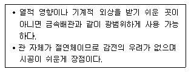
- 버스덕트 공사
- 애자사용 공사
- 합성수지관 공사
- 플로어덕트 공사
(정답률: 75%)
71. 가스의 연소성을 나타내는 것은?
- 비열비
- 가버너
- 웨버지수
- 단열지수
(정답률: 59%)
72. 중앙식 급탕법에 관한 설명으로 옳지 않은 것은?
- 배관 및 기기로부터의 열손실이 많다.
- 급탕개소마다 가열기의 설치스페이스가 필요하다.
- 일반적으로 열원장치는 공조설비와 겸용하여 설치된다.
- 급탕기구의 동시사용율을 고려하기 때문에 가열장치의 전체용량을 줄일 수 있다.
(정답률: 71%)
73. 덕트의 분기부에 설치하여 풍량조절용으로 사용되는 댐퍼는?
- 스플릿 댐퍼
- 평행익형 댐퍼
- 대향익형 댐퍼
- 버터플라이 댐퍼
(정답률: 72%)
74. 소방시설은 소화설비, 경보설비, 피난설비, 소화용수설비, 소화활동설비로 구분할 수 있다. 다음 중 소화활동설비에 속하는 것은?
- 제연설비
- 비상방송설비
- 스프링클러설비
- 자동화재탐지설비
(정답률: 66%)
75. 건구온도 26°C인 실내공기 8,000m3/h와 건구온도 32°C인 외부공기 2,000m3/h를 단열혼합하였을 때 혼합공기의 건구온도는?
- 27.2°C
- 27.6°C
- 28.0°C
- 29.0°C
(정답률: 76%)
76. 엘리베이터의 기계실에 있는 주요설비에 속하지 않는 것은?
- 조속기
- 권상기
- 완충기
- 전자 브레이크
(정답률: 52%)
77. 다음 설명에 알맞은 통기관의 종류는?
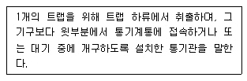
- 루프통기관
- 신정통기관
- 결합통기관
- 각개통기관
(정답률: 44%)
78. 다음 설명에 알맞은 전동기의 종류는?
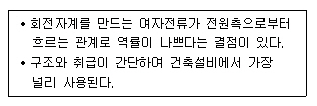
- 직권전동기
- 분권전동기
- 유도전동기
- 동기전동기
(정답률: 77%)
79. 건축물 등에서 항공기의 추돌을 방지하기 위하여 설치하는 각종의 안전등화를 무엇이라 하는가?
- 선회등
- 유도로등
- 항공등화
- 항공장애표시등
(정답률: 65%)
80. 다음과 같은 벽체의 열관류율은?
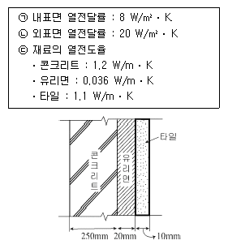
- 약 0.90Wm2⋅ㆍK
- 약 1.⑤Wm2⋅ㆍK
- 약 1.20Wm2ㆍK
- 약 1.35Wm2 ㆍK
(정답률: 56%)
5과목: 건축법규
81. 준주거지역에서 건축할 수 없는 건축물은?
- 위락시설
- 종교시설
- 공동주택 중 아파트
- 문화 및 집회시설 중 전시장
(정답률: 47%)
82. 범죄예방 기준에 따라 건축하여야 하는 대상 건축물에 속하지 않는 것은?(관련 규정 개정전 문제로 여기서는 기존 정답인 3번을 누르면 정답 처리됩니다. 자세한 내용은 해설을 참고하세요.)
- 수련시설
- 업무시설 중 오피스텔
- 숙박시설 중 일반숙박시설
- 공동주택 중 세대수가 500세대인 아파트
(정답률: 66%)
83. 국토의 계획 및 이용에 관한 법령상 광장 ㆍ 공원 ㆍ 녹지 ㆍ 유원지 ㆍ 공공공지가 속하는 기반시설은?
- 교통시설
- 공간시설
- 환경기초시설
- 보건위생시설
(정답률: 77%)
84. 건축물의 주요구조부를 내화구조로 하여야 하는 대상 건축물에 속하지 않는 것은?
- 공장의 용도로 쓰는 건축물로서 그 용도로 쓰는 바닥면적 합계가 500m2 인 건축물
- 판매시설의 용도로 쓰는 건축물로서 그 용도로 쓰는 바닥면적 합계가 500m2 인 건축물
- 창고시설의 용도로 쓰는 건축물로서 그 용도로 쓰는 바닥면적 합계가 500m2 인 건축물
- 문화 및 집회시설 중 전시장의 용도로 쓰는 건축물로서 그 용도로 쓰는 바닥면적 합계가 500m2 인 건축물
(정답률: 53%)
85. 다음 중 특별건축구역으로 지정할 수 있는 사업구역에 속하지 않는 것은?
- 「도로법」에 따른 접도구역
- 「도시개발법」에 따른 도시개발구역
- 「택지개발촉진법」에 따른 택지개발사업구역
- 「공공기관 지방이전에 따른 혁신도시 건설 및 지원에 관한 특별법」에 따른 혁신도시의 사업구역
(정답률: 72%)
86. 다음은 건축법상 리모델링에 대비한 특례 등에 관한 내용이다. ( )안에 알맞은 것은?
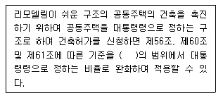
- 100분의 110
- 100분의 120
- 100분의 140
- 100분의 150
(정답률: 82%)
87. 건축물의 건축주가 착공신고를 할 때, 해당 건축물의 설계자로부터 받은 구조안전의 확인서류를 허가권자에게 제출하여야 하는 대상 건축물 기준으로 옳지 않은 것은? (단, 허가대상 건축물인 경우)(관련 규정 개정전 문제로 여기서는 기존 정답인 1번을 누르면 정답 처리됩니다. 자세한 내용은 해설을 참고하세요.)
- 높이가 11m 이상인 건축물
- 처마높이가 9m 이상인 건축물
- 국토교통부령으로 정하는 지진구역 안의 건축물
- 기둥과 기둥 사이의 거리가 10m 이상인 건축물
(정답률: 73%)
88. 문화 및 집회시설 중 공연장의 개별관람석에 다음과 같이 출구를 설치하였을 경우, 옳은 것은? (단, 개별관람석의 바닥면적은 900m2이다.)
- 출구를 1개소 설치하였다.
- 각 출구의 유효너비를 2.4m로 하였다.
- 출구로 쓰이는 문을 안여닫이로 하였다.
- 출구의 유효너비의 합계를 5.0m로 하였다.
(정답률: 57%)
89. 6층 이상의 거실면적 합계가 9,000m2인 층수가 10층인 업무시설에 설치하여야 하는 승용승강기의 최소대수는? (단, 8인승 승강기의 경우)
- 2대
- 3대
- 4대
- 5대
(정답률: 66%)
90. 상업지역에서 건축물에 설치하는 냉방시설 및 환기시설의 배기구는 도로면으로부터 최소 얼마 이상의 높이에 설치하여야 하는가?
- 1m
- 1.5m
- 2m
- 2.5m
(정답률: 66%)
91. 다음 중 신고대상에 속하는 용도변경은?
- 영업시설군에서 문화 및 집회시설군으로 용도변경
- 근린생활시설군에서 주거업무시설군으로 용도변경
- 산업 등의 시설군에서 자동차관련시설군으로 용도변경
- 교육 및 복지시설군에서 전기통신시설군으로 용도변경
(정답률: 69%)
92. 노외주차장인 주차전용건축물의 건폐율, 용적률, 대지면적의 최소한도 및 높이 제한에 관한 기준 내용으로 옳지 않은 것은?
- 건폐율: 100분의 90 이하
- 용적률: 1,500% 이하
- 대지면적의 최소한도: 45m2 이상
- 높이 제한(대지가 너비 12m 미만의 도로에 접하는 경우): 건축물의 각 부분의 높이는 그 부분으로부터 대지에 접한 도로의 반대쪽 경계선까지의 수평거리의 4배
(정답률: 53%)
93. 다음 중 건축물관련 건축기준의 허용되는 오차의 범위(%)가 가장 큰 것은?
- 평면길이
- 출구너비
- 반자높이
- 바닥판두께
(정답률: 70%)
94. 학교시설 ㆍ 공용시설 ㆍ 항만 또는 공항의 보호, 업무기능의 효율화, 항공기의 안전운항 등을 위하여 필요한 용도지구는?(관련 규정 개정전 문제로 여기서는 기존 정답인 4번을 누르면 정답 처리됩니다. 자세한 내용은 해설을 참고하세요.)
- 고도지구
- 보존지구
- 개발진흥지구
- 시설보호지구
(정답률: 78%)
95. 건축물의 용도를 변경하는 경우 변경 후 용도의 주차대수와 변경 전 용도의 주차대수의 차이에 해당하는 부설주차장을 추가로 확보하지 아니하고 용도를 변경할수 있는 경우에 속하지 않는 것은? (단, 사용승인 후 5년이 지난 연면적 1,000m2 미만의 건축물의 용도를 변경하는 경우)
- 종교시설의 용도로 변경하는 경우
- 판매시설의 용도로 변경하는 경우
- 다세대주택의 용도로 변경하는 경우
- 문화 및 집회시설 중 전시장의 용도로 변경하는 경우
(정답률: 44%)
96. 면적의 산정방법 중 건축물의 외벽(외벽이 없는 경우에는 외곽 부분의 기둥)의 중심선으로 둘러싸인 부분의 수평투영면적으로 하는 것은?
- 연면적
- 대지면적
- 건축면적
- 거실면적
(정답률: 69%)
97. 출입구의 개소에 관계없이 노외주차장의 차로의 너비를 최소 6m 이상으로 하여야 하는 주차형식은? (단, 이륜자동차전용 외의 노외주차장의 경우)(관련 규정 개정전 문제로 여기서는 기존 정답인 2번을 누르면 정답 처리됩니다. 자세한 내용은 해설을 참고하세요.)
- 평행주차
- 직각주차
- 교차주차
- 45도 대향주차
(정답률: 72%)
98. 다음 중 바닥면적에 산입되는 것은?
- 층고가 1.5m인 다락방
- 다세대주택의 편복도
- 공동주택의 필로티 부분
- 공동주택의 지상층에 설치한 기계실
(정답률: 55%)
99. 건축법령상 공동주택에 속하지 않는 것은?
- 기숙사
- 연립주택
- 다가구주택
- 다세대주택
(정답률: 68%)
100. 주거지역 중 단독주택 중심의 양호한 주거환경을 보호하기 위하여 지정하는 지역은?
- 제1종 전용주거지역
- 제2종 전용주거지역
- 제1종 일반주거지역
- 제2종 일반주거지역
(정답률: 76%)